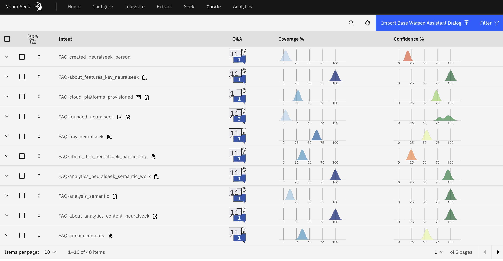

Overview

NeuralSeek's "Curate" features allows users to view intents generated from the KnowledgeBase, import and export intents into the assistant, and manage example questions and answers. The intent content and parameters can be adapted and adjusted to accommodate employee and customer needs.
Users can also view the results of other features as well, such as round trip logging, merge/unmerge actions, whether the intent contains any Personally Identifiable Information (P.I.I.), and whether the source knowledge base information has changed so that user can easily detect whether the answer that were generated needs to be updated or not.
Sometimes, it is easier to curate all the questions and answers outside of NeuralSeek, and upload them in batch. Use the "Curate" feature to upload and update the curated Q&A (supports CSV format). A template CSV file is given for you to use it.
See Curation of Answers for more info.